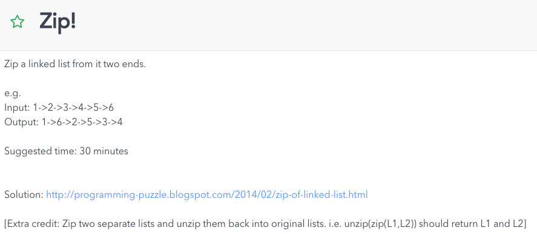
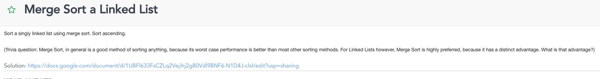
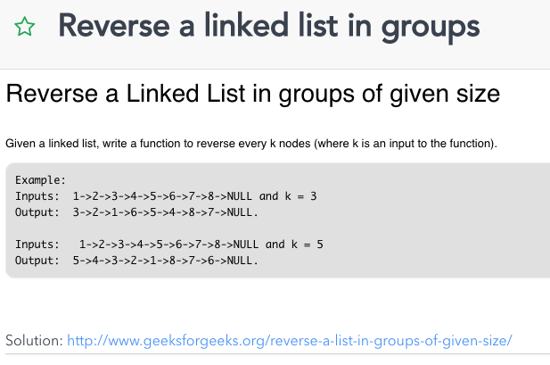

https://leetcode.com/problems/delete-node-in-a-linked-list/
Write a function to delete a node (except the tail) in a singly linked list, given only access to that node.
Supposed the linked list is1 -> 2 -> 3 -> 4and you are given the third node with value
3, the linked list should become1 -> 2 -> 4after calling your function.
Typically, to remove a node, we change the prev to point to n.next
Alternatively, we can copy the next val over, and skip the next node
/*** Definition for singly-linked list.* public class ListNode {* int val;* ListNode next;* ListNode(int x) { val = x; }* }*/private void {node.val = node.next.val;node.next = node.next.next;}
Time: O(1)
Space: O(1)
Remember that removal can also be accomplished by overwriting
https://leetcode.com/problems/remove-linked-list-elements/
Remove all elements from a linked list of integers that have value val.
Example
Given:1 --> 2 --> 6 --> 3 --> 4 --> 5 --> 6,val = 6
Return:1 --> 2 --> 3 --> 4 --> 5
We canât assume that the first node wonât be removed
We have two choices:
Use a temporary node (prehead)
Use recursion
/*** Definition for singly-linked list.* public class ListNode {* int val;* ListNode next;* ListNode(int x) { val = x; }* }*/private ListNode {;preHead.next = head;;while (p.next != null) {if (p.next.val == val) {p.next = p.next.next;} else {p = p.next;}}return preHead.next;}
Time: O(n)
Space: O(1)
Remember that you can always use an additional node
/*** Definition for singly-linked list.* public class ListNode {* int val;* ListNode next;* ListNode(int x) { val = x; }* }*/public ListNode {if (head == null) {return head;};if (head.val == val) {return tail;} else {head.next = tail;return head;}}
Time: O(n)
Space: O(n) due to implicit stack
https://leetcode.com/problems/reverse-linked-list/
Reverse a singly linked list
We can do this iteratively or recursively. Iteratively uses less space,
since we donât use an implicit stack
Assume that we have linked list 1 â 2 â 3 â Ã, we would like to change it to à â 1 â 2 â 3.
While you are traversing the list,
change the current nodeâs next pointer to point to its previous element.
Since a node does not have reference to its previous node, you must store its
previous element beforehand. You also need another pointer to store the next
node before changing the reference. Do not forget to return the new head
reference at the end!
private ListNode {;;while (curr != null) {;curr.next = prev;prev = curr;curr = nextTemp;}return prev;}
Time: O(n)
Space: O(1)
The recursive version is slightly trickier and the key is to work backwards. Assume that the rest of the list had already been reversed, now how do I reverse the front part? Letâs assume the list is: n1 â ⦠â nk-1 â nk â nk+1 â ⦠â nm â Ã
Assume from node nk+1 to nm had been reversed and you are at node nk.
n1 â ⦠â nk-1 â nk â nk+1 â ⦠â nm
We want nk+1âs next node to point to nk.
So,
nk.next.next = nk;
Be very careful that n1âs next must point to Ã. If you forget about this, your linked list has a cycle in it. This bug could be caught if you test your code with a linked list of size 2.
/*** Definition for singly-linked list.* public class ListNode {* int val;* ListNode next;* ListNode(int x) { val = x; }* }*/private ListNode {if (head == null || head.next == null) {return head;};head.next = null; // unlink from rest to prevent cycle;next.next = head; // join two linksreturn newHead;}
Time: O(n)
Space: O(n) due to implicit stack
Technique
Get the middle node in a singly linked list
Use two pointers, one moving twice as fast as the other
When fast pointer has reached the end, we got the mid point
/*** Definition for singly-linked list.* public class ListNode {* int val;* ListNode next;* ListNode(int x) { val = x; }* }*/private ListNode {;;while (end != null && end.next != null) {mid = mid.next;end = end.next.next;}return mid;}
Time: O(n)
Space: O(1)
Use multiple pointers when traversing singly linked list if you know proportions
Technique
Split a linked list into two even halves
Use two pointers, one moving twice as fast as the other
When fast pointer has reached the end, we got the mid point
Keep another pointer before mid to split
/*** Definition for singly-linked list.* public class ListNode {* int val;* ListNode next;* ListNode(int x) { val = x; }* }* public class Result {* ListNode first;* ListNode second;* }*/private Result {;;;while (end != null && end.next != null) {midPrev = mid;mid = mid.next;end = end.next.next;}if (midPrev != null) {midPrev.next = null;}return new Result(head, mid);}
Time: O(n)
Space: O(1)
Use multiple pointers when traversing singly linked list
Remember to keep previous if you need to split
https://programming-puzzle.blogspot.com/2014/02/zip-of-linked-list.html

Split the list into two equal halves
Reverse second list
Merge both lists into one
/*** Definition for singly-linked list.* public class ListNode {* int val;* ListNode next;* ListNode(int x) { val = x; }* }*/static ListNode {if (head == null || head.next == null) {return head;}// Find mid point O(n);;;while (end != null && end.next != null) {midPrev = mid;mid = mid.next;end = end.next.next;}// Split into two listsif (midPrev != null) {midPrev.next = null;}// Reverse 2nd list O(n/2) => O(n);;;while (currNode != null) {nextNode = currNode.next;currNode.next = prevNode;prevNode = currNode;currNode = nextNode;}// Merge our two lists, O(n);;;currNode = preHead;;while (firstList != null && secondList != null) {if (index % 2 == 1) {currNode.next = firstList;currNode = firstList;firstList = firstList.next;} else {currNode.next = secondList;currNode = secondList;secondList = secondList.next;}index++;}if (firstList != null) {currNode.next = firstList;}if (secondList != null) {currNode.next = secondList;}return preHead.next;}
Time: O(n)
Space: O(1)
Reuse existing techniques
https://leetcode.com/problems/sliding-window-maximum/
Use a double ended queue to store indices of max items in window
As you iterate through the input, check that elements in queue are in window
Remove smallest elements from back in window on new input. We know we have a better option now
static long[] {if (input == null || windowSize <= 0) {return new long[0];};;// queue contains a queue of indexes for our sliding window;for (; i < input.length; i++) {;;// Remove elements that are below our windowwhile (!queue && queue < lowerWindowIndex) {queue;}// Remove smaller elements in our windowwhile (!queue && input[queue] < inputVal) {queue;}// Add new index, update resultqueue;if (i >= windowSize - 1) {result[resultIndex++] = input[queue];}}return result;}
Time: O(n)
Space: O(n) due to queue
Think of queues for sliding windows (when you have to do time based eviction)
Think about removing from back of deque too
http://www.geeksforgeeks.org/a-linked-list-with-next-and-arbit-pointer/

Create copy of nodes and insert into between original nodes
Similarly, update random links
Iterate copy list and split
/*** Definition for random-linked list.* private static class RandomListNode {* int value;* RandomListNode next, random;* RandomListNode(int x) { this.value = x; }}*/private static RandomListNode {if (head == null) {return null;};// Create copies of nodes and insert it after originalswhile (original != null) {;copy.next = original.next;original.next = copy;original = copy.next;}// Copy random linksoriginal = head;while (original != null) {original.next.random = original.random.next;original = original.next.next;}// Restore original and copy listsoriginal = head;;;while (copy.next != null) {original.next = original.next.next;copy.next = copy.next.next;original = original.next;copy = copy.next;}original.next = null; // restore last originalreturn copyHead;}
Time: O(n)
Space: O(1)
Exploit structure of links

Split list into two again, and recursively merge sort them
/*** Definition for singly-linked list.* public class ListNode {* int val;* ListNode next;* ListNode(int x) { val = x; }* }*/static ListNode {return ;}static ListNode {if (head == null || head.next == null) {return head;}// Find mid point O(n);;;while (end != null && end.next != null) {midPrev = mid;mid = mid.next;end = end.next.next;}// Split into two listsif (midPrev != null) {midPrev.next = null;};;return ;}static ListNode {foo = ;bar = ;// Merge our two lists, O(n);;while (foo != null && bar != null) {if (foo.val <= bar.val) {currNode.next = foo;currNode = foo;foo = foo.next;} else {currNode.next = bar;currNode = bar;bar = bar.next;}}if (foo != null) {currNode.next = foo;}if (bar != null) {currNode.next = bar;}return preHead.next;}
Time: O(nlog(n))
Space: O(1)
Use existing techniques
Merge sort is preferred for Linked Lists
â Insertion in the middle is O(1), with O(1) space. We donât need extra space unlike arrays.
â Merge sort accesses memory sequentially, we donât need random access (unlike quicksort)

Maintain a second stack that will store increments
/*** Definition for Delta.* private static class Delta {* int fromBottom;* int increment;** Delta(int fromBottom, int increment) {* this.fromBottom = fromBottom;* this.increment = increment;* }* }*/
Time: See above
Space: See above
Think about using auxiliary stacks if you need to store information

Use hashmap for storing keys and values
Use linked list for knowing what to evict
Time: O(1)
Space: O(n)
Use a combination of data structures

Use prehead and split list
/*** Definition for singly-linked list.* public class ListNode {* int val;* ListNode next;* ListNode(int x) { val = x; }* }*/private static void {;;;;;while (head != null) {if (index % 2 == 1) {currHead1.next = head;currHead1 = head;} else {currHead2.next = head;currHead2 = head;}head = head.next;index++;}currHead1.next = null;currHead2.next = null;;;// Two lists are preHead1.next and preHead2.next}
Time: O(n)
Space: O(1)
Remember to use a prehead if it simplifies things

Use previous technique
/*** Definition for singly-linked list.* public class ListNode {* int val;* ListNode next;* ListNode(int x) { val = x; }* }*/static int {if (head == null) {return 0;}if (head.next == null) {return head.val;}// Find mid point O(n);;while (end != null && end.next != null) {mid = mid.next;end = end.next.next;}return mid.val;}
Time: O(n)
Space: O(1)
Nothing really

Use a stack to match parans
static boolean {if (strExpression) {return false;};for (; i < strExpression; i++) {;if (c || c || c) {stack;}if (c) {if (!stack && stack) {stack;continue;}return false;}if (c) {if (!stack && stack) {stack;continue;}return false;}if (c) {if (!stack && stack) {stack;continue;}return false;}}return stack;}
Time: O(n)
Space: O(n)
Use stack to store matching parans

We can use a stack to measure matching parans, but this time we need max length
Instead, store the last index of a opening parans
private static int {;;; // used to store last index of '(for (; i < parans; i++) {if (parans == '(') {s;} else {if (s) {last = i;} else {s;if (s) {maxLength = Math;} else {maxLength = Math;}}}}return maxLength;}
Time: O(n)
Space: O(n)
Stacks can also store indices for given condition

Use existing techniques to find kth nodes from start and end
Swap them, taking care if they are next to each other
/*** Definition for singly-linked list.* public class ListNode {* int val;* ListNode next;* ListNode(int x) { val = x; }* }*/private static ListNode {;while (end != null && k > 0) {end = end.next;k--;}if (end == null) {return null; // LL is too short};while (end != null) {end = end.next;n = n.next;}return n;}private static ListNode {;while (n != null && k > 1) { // using 1 based indexingn = n.next;k--;}return n;}static ListNode {;tmpHead.next = root;;;if (prevStart == null || prevEnd == null) {return null;};;if (start == prevEnd) {start.next = start.next.next;prevStart.next = end;end.next = start;return tmpHead.next;} else if (end == prevStart) {end.next = end.next.next;prevEnd.next = start;start.next = end;return tmpHead.next;};start.next = end.next;end.next = startNext;prevStart.next = end;prevEnd.next = start;return tmpHead.next;}
Time: O(n)
Space: O(1)
Combine existing techniques
http://www.geeksforgeeks.org/reverse-a-list-in-groups-of-given-size/

Reverse the first sub-list of size k.
While reversing keep track of the next node and previous node.
Let the pointer to the next node be next and pointer to the previous node be prev.
recursively call for the remainder of the list and link them both up
return prev as part of recursive call
/*** Definition for singly-linked list.* public class ListNode {* int val;* ListNode next;* ListNode(int x) { val = x; }* }*/static ListNode {;;;;while (curr != null && count > 0) {next = curr.next;curr.next = prev;prev = curr;curr = next;count--;}if (next != null) {head.next = ;}return prev;}
Time: O(n)
Space: O(1)
Use return values from recursive calls to link up linked lists
http://algorithms.tutorialhorizon.com/remove-duplicates-from-an-unsorted-linked-list/

Use hash table to dedup (without it, O(n^2))
Remove nodes if already present
/*** Definition for singly-linked list.* public class ListNode {* int val;* ListNode next;* ListNode(int x) { val = x; }* }*/static ListNode {;if (head == null) {return null;};while (node.next != null) {vals;while (node.next != null && vals) {node.next = node.next.next;}node = node.next;if (node == null) {break;}}return head;}
Time: O(n)
Space: O(n)
Remove removal in singly linked list requires two pointers
http://articles.leetcode.com/stack-that-supports-push-pop-and-getmin/
http://www.geeksforgeeks.org/design-and-implement-special-stack-data-structure/
http://www.geeksforgeeks.org/design-a-stack-that-supports-getmin-in-o1-time-and-o1-extra-space/

Use another stack to keep track of mins
Time: See above
Space: See above
Use auxiliary stacks